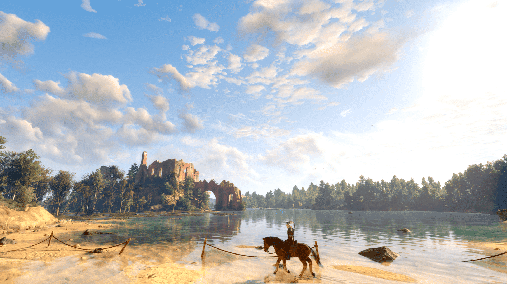

} About {
The Witcher 3 was released in 2015 as the third instalment of the series of games adapted
from the popular book series written by Andrzej Sapkowski. The game put you in the shoes of Geralt of Rivia,
a mutated monster hunter or Witcher as they're known in the fantasy world of the Continent in which the books
and games take place. With the games remaster released in 2022 came a new photo mode, a popular feature of
many modern video games. I very quickly started capturing pictures of everything I could, from character
interactions, the detailed landscapes and set pieces, to the various monster encounters found throughout the world.

I had the idea for this website when I started a web application development course
with a company called Code Institute. For my first project I had to come up with an idea for a website
and build it from scratch, so I decided to merge two of my passions together and create the site you are currently on.
And now that I have a good number of photos to share with you, aswell as a platform to showcase them, I present them
all to you on the Gallery page of this website for you to download and use them as screensavers on your devices
or even continue editing them yourself and make them unique to you!

{ This Site is Intended for Educational Purposes Only. All Images Remain the Property of CD Projekt Red }